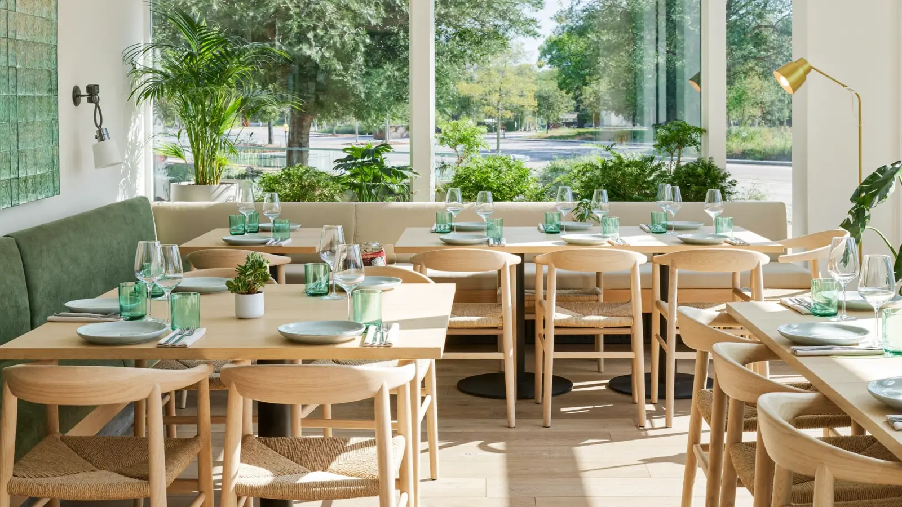

Mediterránea de temporada en la Avinguda Fages de Climent. Lo que más repite la gente no es un plato: es la cara que se le queda al ver la cuenta.

La casa
Essencia está en la Avinguda Fages de Climent, en el sector Muga de Empuriabrava. Cocina mediterránea con mano de autor: producto de temporada, y platos pensados en vez de repetidos.
Está el séptimo de 112 restaurantes del pueblo, con un 4,3 de media y 675 opiniones en TripAdvisor — más otras 1.502 en Restaurant Guru, donde sube a 4,4. Son más de dos mil personas que se han molestado en escribir.
Lo que dicen
Cómo llegar
En la Avinguda Fages de Climent, sector Muga, en Empuriabrava. Para reservar, llamada o WhatsApp.
Llamar ahora Abrir en MapsPreguntas frecuentes
Sí, y es lo más nombrado de la casa: tres platos de cocina de autor a precio de menú.
Mediterránea de autor, con producto de temporada.
Lo que más repiten los clientes es justo lo contrario: que la calidad está por encima de lo que se paga.
En temporada, mejor sí. Llamando o por WhatsApp al 671 72 47 65.
En la Avinguda Fages de Climent, en el sector Muga de Empuriabrava.